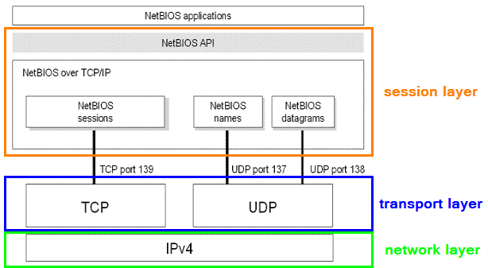

NetBIOS
NetBIOS → Network Basic Input Output System
NetBIOS have an important role in the MS Windows network.
It provides services related to the
session layer of the OSI model allowing applications on separate computers to communicate over a local area network.
NetBIOS is a protocol used to both gather information and configure network devices (printers, switches, servers…)
| layers | TCP/IP | ISO/OSI | Protocols | what they do |
|---|
| 5 | Application | Session | NFS, SQL, RPC, NetBIOS | establishes and maintains the connection between systems and formats the data for transfer between nodes |
Every Windows system have the following information, that can supply when others query:
• Hostname
• NetBIOS name
• Domain
•
Network sharesNetBIOS session service → reliable service over TCP in-order to delivery packets(example: file copy)
NetBIOS name service → service over UDP providing name resolution(example: find workgroups)
NetBIOS datagram service → service over UDP providing unreliable transport for unicast, multicast, and broadcast messages(example:list the shares and the machines)
Bibliography:
http://www.doma-musicpub.cz/netbios-co-je-to-porty/